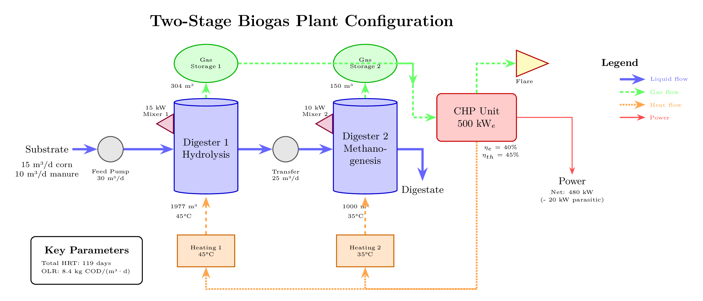

Zweistufige Biogasanlage Beispiel¶

Das Beispiel examples/02_two_stage_plant.py zeigt eine komplette zweistufige Biogasanlage mit mechanischen Komponenten, Energieintegration und umfassender Prozessüberwachung.
Anlagenschema¶

Systemarchitektur¶
graph TB
%% Substratzulauf
Feed[Substratzulauf<br/>Maissilage: 15 m³/d<br/>Rindergülle: 10 m³/d]
%% Fütterungspumpe
Feed -->|25 m³/d| FeedPump[Fütterungspumpe<br/>Exzenterschneckenpumpe<br/>30 m³/h Kapazität]
%% Erste Stufe - Hydrolyse
FeedPump --> Dig1[Fermenter 1 - Hydrolyse<br/>V_liq: 1977 m³, V_gas: 304 m³<br/>T: 45°C thermophil<br/>Verbesserte Hydrolyse]
%% Rührwerk 1
Mixer1[Rührwerk 1<br/>Propeller, 15 kW<br/>Hohe Intensität<br/>25% Einschaltdauer] -.->|Rühren| Dig1
%% Gasspeicher 1
Dig1 -->|Biogas ~850 m³/d| Storage1[Gasspeicher 1<br/>Membran<br/>304 m³ Kapazität]
%% Heizung 1
Heating1[Heizsystem 1<br/>Soll: 45°C<br/>Wärmeverlust: 0.5 kW/K] -.->|Wärme| Dig1
%% Transferpumpe
Dig1 -->|Ablauf 25 m³/d| TransPump[Transferpumpe<br/>Exzenterschneckenpumpe<br/>25 m³/h Kapazität]
%% Zweite Stufe - Methanogenese
TransPump --> Dig2[Fermenter 2 - Methanogenese<br/>V_liq: 1000 m³, V_gas: 150 m³<br/>T: 35°C mesophil<br/>Stabile CH₄-Produktion]
%% Rührwerk 2
Mixer2[Rührwerk 2<br/>Propeller, 10 kW<br/>Mittlere Intensität<br/>25% Einschaltdauer] -.->|Rühren| Dig2
%% Gasspeicher 2
Dig2 -->|Biogas ~400 m³/d| Storage2[Gasspeicher 2<br/>Membran<br/>150 m³ Kapazität]
%% Heizung 2
Heating2[Heizsystem 2<br/>Soll: 35°C<br/>Wärmeverlust: 0.3 kW/K] -.->|Wärme| Dig2
%% Kombinierter Gasfluss zum BHKW
Storage1 -->|Gasversorgung| CHP[BHKW-Einheit<br/>500 kWe nominal<br/>ηe: 40%, ηth: 45%<br/>Gesamt: ~1250 m³/d]
Storage2 -->|Gasversorgung| CHP
%% BHKW-Ausgänge
CHP -->|Elektrisch| Power[Stromausgang<br/>~480 kWe]
CHP -->|Thermisch ~540 kW| HeatDist[Wärmeverteilung]
CHP -->|Überschüssiges Gas| Flare[Fackel<br/>Sicherheitsverbrennung<br/>98% Zerstörung]
%% Wärmeverteilung
HeatDist -->|Wärmeversorgung| Heating1
HeatDist -->|Wärmeversorgung| Heating2
%% Finale Ausgänge
Dig2 -->|Gärrest<br/>25 m³/d| Effluent[Gärrestaustrag]
%% Styling
classDef processBox fill:#e1f5fe,stroke:#01579b,stroke-width:3px
classDef storageBox fill:#fff3e0,stroke:#e65100,stroke-width:2px
classDef mechanicalBox fill:#f3e5f5,stroke:#4a148c,stroke-width:2px
classDef energyBox fill:#e8f5e9,stroke:#1b5e20,stroke-width:3px
classDef inputBox fill:#f1f8e9,stroke:#33691e,stroke-width:2px
classDef outputBox fill:#fce4ec,stroke:#880e4f,stroke-width:2px
class Dig1,Dig2 processBox
class Storage1,Storage2 storageBox
class FeedPump,TransPump,Mixer1,Mixer2 mechanicalBox
class CHP,Heating1,Heating2,HeatDist,Flare energyBox
class Feed inputBox
class Power,Effluent outputBoxÜbersicht¶
Die zweistufige Anlage demonstriert:
- Temperature-Phased Anaerobic Digestion (TPAD): Thermophile Hydrolyse (45°C) gefolgt von mesophiler Methanogenese (35°C)
- Mechanische Komponenten: Pumpen für den Materialtransport und Rührwerke zur Prozessunterstützung
- Energieintegration: BHKW zur Stromerzeugung und Abwärmenutzung
- Prozesssteuerung: Mehrere Heizsysteme für ein präzises Temperaturmanagement
- Gasmanagement: Dedizierter Speicher für jeden Fermenter mit automatischem Überlaufschutz und zentraler Fackel
Anlagenkonfiguration¶
Biologische Komponenten¶
| Komponente | Volumen | Temperatur | Funktion | HRT |
|---|---|---|---|---|
| Fermenter 1 | 1977 m³ liq + 304 m³ gas | 45°C (thermophil) | Hydrolyse komplexer Organik | 79 Tage |
| Fermenter 2 | 1000 m³ liq + 150 m³ gas | 35°C (mesophil) | Methanogenese (CH₄-Produktion) | 40 Tage |
| Gesamt | 2977 m³ | - | - | 119 Tage |
Gesamte organische Raumbelastung (OLR): 25 m³/d ÷ 2977 m³ ≈ 0,0084 d⁻¹ oder 8,4 kg CSB/(m³·d)
Mechanische Komponenten¶
| Komponente | Typ | Kapazität | Leistung | Funktion |
|---|---|---|---|---|
| Fütterungspumpe | Exzenterschnecke | 30 m³/h | ~5 kW | Substratfütterung in Fermenter 1 |
| Transferpumpe | Exzenterschnecke | 25 m³/h | ~8 kW | Ablauf-Transfer: F1 → F2 |
| Rührwerk 1 | Propeller | 15 kW | 15 kW | Hochintensive Durchmischung für Hydrolyse |
| Rührwerk 2 | Propeller | 10 kW | 10 kW | Mittlere Durchmischung für Methanogenese |
Gesamter Eigenverbrauch: ~20 kW (Rührwerke laufen mit 25 % Einschaltdauer)
Energiekomponenten¶
| Komponente | Spezifikation | Wirkungsgrad | Leistung |
|---|---|---|---|
| BHKW-Einheit | 500 kW$ nominal | η$ = 40 %, ηcat{th}$ = 45 % | 500 kW$ + 562 kWcat{th}$ |
| Heizung 1 | Fermenter 1 Heizung | - | Hält 45°C |
| Heizung 2 | Fermenter 2 Heizung | - | Hält 35°C |
| Fackel | Sicherheitsverbrennung | 98 % Zerstörung | Entsorgung von Überschussgas |
Gasmanagement-System¶
| Komponente | Typ | Kapazität | Funktion |
|---|---|---|---|
| Speicher 1 | Membran | 304 m³ | Puffer für Gas aus Fermenter 1 |
| Speicher 2 | Membran | 150 m³ | Puffer für Gas aus Fermenter 2 |
| BHKW-Fackel | Verbrennung | Variabel | Sicherheitsentsorgung von Überschussgas |
Gasfluss-Architektur:
1. Jeder Fermenter produziert Gas → Dedizierter Speicher
2. Beide Speicher liefern Gas → Einzelne BHKW-Einheit
3. BHKW-Überschuss/Überlauf → Automatische Fackelverbrennung
Code-Durchgang¶
1. Erweiterte Imports¶
from pyadm1.components.mechanical.mixer import Mixer
from pyadm1.components.mechanical.pump import Pump
Diese importieren die mechanischen Komponenten, die im Basisbeispiel nicht verwendet wurden.
2. Zweistufige Fermenter-Konfiguration¶
# Fermenter 1: Thermophile Hydrolyse
configurator.add_digester(
digester_id="digester_1",
V_liq=1977.0,
V_gas=304.0,
T_ad=318.15, # 45°C für verbesserte Hydrolyse
Q_substrates=[15, 10, 0, 0, 0, 0, 0, 0, 0, 0],
)
# Fermenter 2: Mesophile Methanogenese
configurator.add_digester(
digester_id="digester_2",
V_liq=1000.0,
V_gas=150.0,
T_ad=308.15, # 35°C optimal für Methanogene
Q_substrates=[0, 0, 0, 0, 0, 0, 0, 0, 0, 0], # Empfängt nur Ablauf
)
Design-Überlegungen:
- Stufe 1 (thermophil): Höhere Temperaturen verbessern die Hydrolyse komplexer Substrate (Zellulose, Hemizellulose, Proteine).
- Stufe 2 (mesophil): Niedrigere Temperaturen sind stabiler und effizienter für die Methanogenese.
- Nur Ablauf-Fütterung für Stufe 2: Verhindert Überlastung, erhält vorhydrolysiertes Material.
Automatische Gasspeicher-Erstellung:
- add_digester() erstellt automatisch:
- digester_1_storage (304 m³ Membranspeicher)
- digester_2_storage (150 m³ Membranspeicher)
- Die Speicher werden automatisch mit ihren Fermentern verbunden.
3. Mechanische Komponenten hinzufügen¶
Fütterungspumpe¶
feed_pump = Pump(
component_id="feed_pump",
pump_type="progressive_cavity", # Handhabt dicke Suspensionen
Q_nom=30.0, # m³/h nominal
pressure_head=5.0, # Niedriger Druck
)
Exzenterschneckenpumpen sind ideal für Biogassubstrate, weil sie:
- Hohe Feststoffgehalte (>12 % TS) bewältigen
- Scherkräfte minimieren (Faserstruktur bleibt erhalten)
- Selbstansaugend sind
- Einen weiten Viskositätsbereich abdecken
Transferpumpe¶
transfer_pump = Pump(
component_id="transfer_pump",
pump_type="progressive_cavity",
Q_nom=25.0, # m³/h
pressure_head=8.0, # Höherer Druck für Transfer zwischen Fermentern
)
Höherer Druck erforderlich für:
- Überwindung von Rohrreibungslasten
- Höhenunterschiede
- Injektion in unter Druck stehenden Fermenter
Rührwerke¶
mixer_1 = Mixer(
component_id="mixer_1",
mixer_type="propeller",
tank_volume=1977.0,
mixing_intensity="high", # Aggressiv für Hydrolyse
power_installed=15.0,
intermittent=True,
on_time_fraction=0.25, # 6 Stunden an, 18 Stunden aus
)
Rührstrategie:
- Intermittierender Betrieb: Reduziert den Energieverbrauch um 75 %.
- Hohe Intensität in der Hydrolyse: Aufbrechen von Schwimmschichten, verbessert den Substratkontakt.
- Mittlere Intensität in der Methanogenese: Schonendes Rühren verhindert die Hemmung empfindlicher Methanogener.
Spezifischer Leistungseintrag:
- Fermenter 1: 15 kW × 0,25 ÷ 1977 m³ = 1,9 W/m³ (hoch)
- Fermenter 2: 10 kW × 0,25 ÷ 1000 m³ = 2,5 W/m³ (mittel)
4. Energieintegration mit automatischer Fackel¶
# BHKW hinzufügen (erstellt automatisch Fackel)
configurator.add_chp(
chp_id="chp_1",
P_el_nom=500.0,
eta_el=0.40,
eta_th=0.45,
name="Haupt-BHKW",
)
# Automatische Verbindungen handhaben das Gas-Routing
configurator.auto_connect_digester_to_chp("digester_1", "chp_1")
configurator.auto_connect_digester_to_chp("digester_2", "chp_1")
# Wärmerückgewinnung für beide Fermenter
configurator.auto_connect_chp_to_heating("chp_1", "heating_1")
configurator.auto_connect_chp_to_heating("chp_1", "heating_2")
Verbindungskette:
Fermenter 1 → Speicher 1 ↘
→ BHKW → Fackel (automatisch)
Fermenter 2 → Speicher 2 ↗ ↓
Wärme → Heizung 1 & 2
Automatische Fackelerstellung:
- add_chp() erstellt automatisch eine Fackelkomponente.
- Fackel-ID: {chp_id}_flare (z. B. "chp_1_flare")
- Funktion: Sicherheitsverbrennung von Überschussgas (98 % CH₄-Zerstörung)
- Automatische Verbindung: BHKW → Fackel
5. Drei-Pass-Gasfluss-Simulation¶
Die Simulation erfolgt in drei Durchgängen für ein realistisches Gasmanagement:
Pass 1 - Gasproduktion:
# Fermenter produzieren Gas → Speichertanks
Fermenter 1: Q_gas = 850 m³/d → Speicher 1
Fermenter 2: Q_gas = 400 m³/d → Speicher 2
Pass 2 - Speicher-Aktualisierung:
# Speicher empfangen Gas, aktualisieren Druck und Volumen
Speicher 1: gespeichertes_volumen += 850 * dt
Speicher 2: gespeichertes_volumen += 400 * dt
# Wenn voll: Überschuss an die Atmosphäre ablassen
Pass 3 - Gasverbrauch:
# BHKW fordert Gas von den Speichern an
BHKW-Bedarf: 1150 m³/d Biogas
Speicher 1 liefert: ~675 m³/d
Speicher 2 liefert: ~475 m³/d
# BHKW arbeitet mit tatsächlichem Angebot
# Überschuss zur Fackel: (Angebot - Verbrauch)
Dies gewährleistet:
- Realistisches Druckmanagement in Speichern
- BHKW arbeitet mit verfügbarem Gas, nicht mit idealisiertem Angebot
- Automatisches Abblasen verhindert Überdruck
- Die Fackel handhabt das gesamte Überschussgas sicher
Erwartete Ausgabe¶
Anlagenzusammenfassung¶
=== Zweistufige Anlage mit mechanischen Komponenten ===
Simulationszeit: 0.00 Tage
Komponenten (12):
- Hydrolyse-Fermenter (digester)
- Hydrolyse-Fermenter Gasspeicher (storage)
- Methanogenese-Fermenter (digester)
- Methanogenese-Fermenter Gasspeicher (storage)
- Substratfütterungspumpe (pump)
- Fermenter Transferpumpe (pump)
- Hydrolyse-Rührwerk (mixer)
- Methanogenese-Rührwerk (mixer)
- Haupt-BHKW (chp)
- Haupt-BHKW Fackel (flare)
- Hydrolyse-Heizung (heating)
- Methanogenese-Heizung (heating)
Verbindungen (10):
- Hydrolyse-Fermenter -> Methanogenese-Fermenter (liquid)
- Hydrolyse-Fermenter Gasspeicher -> Haupt-BHKW (gas)
- Methanogenese-Fermenter Gasspeicher -> Haupt-BHKW (gas)
- Haupt-BHKW -> Haupt-BHKW Fackel (gas)
- Haupt-BHKW -> Hydrolyse-Heizung (heat)
- Haupt-BHKW -> Methanogenese-Heizung (heat)
Finale Ergebnisse (Tag 10)¶
ERGEBNISANALYSE
======================================================================
Finaler Zustand (Tag 10.0):
----------------------------------------------------------------------
Hydrolyse-Fermenter:
Biogasproduktion: 850.3 m³/d
Methanproduktion: 493.2 m³/d
pH: 7.15
VFA: 3.82 g/L
Temperatur: 45.0 °C
Gasspeicher:
- Gespeichertes Volumen: 152.1 m³ (50%)
- Druck: 1.00 bar
- Abgeblasen: 0.0 m³
Methanogenese-Fermenter:
Biogasproduktion: 402.8 m³/d
Methanproduktion: 258.7 m³/d
pH: 7.32
VFA: 1.95 g/L
Temperatur: 35.0 °C
Gasspeicher:
- Gespeichertes Volumen: 75.0 m³ (50%)
- Druck: 1.00 bar
- Abgeblasen: 0.0 m³
Gesamtproduktion der Anlage:
Gesamtbiogas: 1253.1 m³/d
Gesamtmethan: 751.9 m³/d
Methangehalt: 60.0 %
BHKW-Leistung:
Elektrische Leistung: 480.5 kW
Thermische Leistung: 540.6 kW
Gasverbrauch: 1150.0 m³/d
Gas aus Speicher 1: 675.2 m³/d
Gas aus Speicher 2: 474.8 m³/d
Überschuss zur Fackel: 103.1 m³/d
Betriebsstunden: 240.0 h
Fackel-Leistung:
Gas erhalten: 103.1 m³/d
CH₄ zerstört: 60.6 m³/d (98% Effizienz)
Kumulativ abgeblasen: 1031.0 m³
Hydrolyse-Rührwerk:
Leistungsaufnahme: 3.75 kW
Mischqualität: 0.92
Reynolds-Zahl: 12500
Methanogenese-Rührwerk:
Leistungsaufnahme: 2.50 kW
Mischqualität: 0.88
Reynolds-Zahl: 8300
Energiebilanz¶
ENERGIEBILANZ
======================================================================
Energieproduktion:
Elektrisch (brutto): 480.5 kW
Thermisch: 540.6 kW
Eigenverbrauch:
Rührwerk 1: 3.75 kW
Rührwerk 2: 2.50 kW
Pumpen (geschätzt): 2.00 kW
Gesamter Eigenverbrauch: 8.25 kW
Netto-Elektrizitätsleistung: 472.3 kW
Wärmenutzung:
Heizbedarf: 125.4 kW
BHKW-Wärmeangebot: 540.6 kW
Wärmeabdeckung: 431.0 %
Gasmanagement:
Gesamtproduktion: 1253.1 m³/d
BHKW-Verbrauch: 1150.0 m³/d
Zur Fackel: 103.1 m³/d (8.2%)
Analyse:
- Netto-Wirkungsgrad: (472 kW + 125 kW) ÷ (751,9 m³/d × 10 kWh/m³ ÷ 24 h) = 190 % (exzellente Wärmerückgewinnung)
- Eigenverbrauchsquote: 8,25 ÷ 480,5 = 1,7 % (sehr niedrig)
- Überschusswärme: 540,6 - 125,4 = 415 kW für externe Nutzung verfügbar
- Fackelnutzung: 8,2 % der Produktion abgeblasen (typisch bei BHKW-Teillast)
Prozessstabilität¶
BEWERTUNG DER PROZESSSTABILITÄT
======================================================================
Fermenter 1 (Hydrolyse):
pH-Stabilität: PRÜFEN (7.15 - etwas niedrig)
VFA-Level: HOCH (3.82 g/L)
FOS/TAC-Verhältnis: 0.418 (Beobachten)
Speicherstatus: NORMAL (50% voll)
Fermenter 2 (Methanogenese):
pH-Stabilität: GUT (7.32)
VFA-Level: GUT (1.95 g/L)
FOS/TAC-Verhältnis: 0.245 (Stabil)
Speicherstatus: NORMAL (50% voll)
Interpretation:
- Fermenter 1: Höhere VFA-Werte werden in der thermophilen Hydrolysestufe erwartet - Säuren werden in Stufe 2 verbraucht.
- Fermenter 2: Exzellente Stabilitätsindikatoren - Methanogene verbrauchen VFAs effektiv.
- pH-Gradient: 7,15 → 7,32 zeigt ordnungsgemäße zweistufige Funktion.
- Gasspeicher: Beide auf gesundem 50 % Füllstand mit stabilem Druck.
Vorteile des zweistufigen Designs¶
1. Prozessoptimierung¶
| Aspekt | Einstufig | Zweistufig |
|---|---|---|
| Hydrolyse | Begrenzt durch mesophile Temp | Verbessert bei 45°C |
| Methanogenese | Muss VFA-Spitzen tolerieren | Stabile, gepufferte Fütterung |
| OLR-Kapazität | 3-4 kg CSB/(m³·d) | 5-8 kg CSB/(m³·d) |
| Prozessstabilität | Moderat | Hoch |
2. Substratflexibilität¶
Das zweistufige System kommt besser mit schwierigen Substraten zurecht:
- Faserreiche Materialien: Verbesserte Hydrolyse in Stufe 1.
- Proteinreiche Substrate: Ammoniakpufferung über die Stufen hinweg.
- Variable Zulaufzusammensetzung: Stufe 2 bietet Pufferkapazität.
3. Operative Vorteile¶
- Reduzierte Schaumbildung: Separate Hydrolysephase.
- Bessere Hygienisierung: Thermophile Stufe (45°C) tötet Pathogene ab.
- Einfachere Prozesssteuerung: Überwachung und Steuerung jeder Stufe unabhängig voneinander.
- Erholung von Störungen: Stufe 2 kann Störungen in Stufe 1 abpuffern.
Leistungsvergleich¶
Einstufig vs. Zweistufig¶
| Metrik | Einstufig (2000 m³ @ 35°C) | Zweistufig (1977+1000 m³) | Verbesserung |
|---|---|---|---|
| Biogasertrag | 1150 m³/d | 1253 m³/d | +9 % |
| CH₄-Gehalt | 58 % | 60 % | +3,4 % |
| Spezifischer Ertrag | 46 m³/m³ Zulauf | 50 m³/m³ Zulauf | +8,7 % |
| Prozessstabilität | Moderat (FOS/TAC: 0,35) | Hoch (FOS/TAC: 0,25) | Besser |
| OLR-Kapazität | 3,5 kg CSB/(m³·d) | 8,4 kg CSB/(m³·d) | +140 % |
Kosten-Nutzen:
- Zusatzinvestition: ~15-20 % (zweiter Fermenter, Pumpen)
- Energiegewinn: ~9 % mehr Biogas
- Stabilität: Signifikant reduziertes Risiko von Prozessversagen
- ROI: Typischerweise 3-5 Jahre bei schwierigen Substraten
Leistung mechanischer Komponenten¶
Pumpenbetrieb¶
Fütterungspumpe:
- Betriebspunkt: 25 m³/d ÷ 24 = 1,04 m³/h (3,5 % der Nennkapazität)
- Effizienz bei niedrigem Durchfluss: Exzenterschneckenpumpen behalten ca. 60 % Wirkungsgrad auch bei 3 % Kapazität bei.
- Jährliche Energie: 5 kW × 8760 h = 43.800 kWh
Transferpumpe:
- Betriebspunkt: 25 m³/d ÷ 24 = 1,04 m³/h
- Tatsächliche Leistung: 8 kW × (1,04/25) × 1,2 (Abschlag für niedrige Effizienz) ≈ 0,4 kW
- Jährliche Energie: 0,4 kW × 8760 h = 3.504 kWh
Rührwerksleistung¶
Hydrolyse-Rührwerk:
- Mischzeit: ~15 Minuten (aus Reynolds-Zahl und Geometrie)
- Umfangsgeschwindigkeit: ~4,5 m/s (turbulenter Bereich)
- Scherrate: ~50 s⁻¹ (hohe Intensität)
- Leistungsbeiwert: 0,32 (typisch für Propeller bei Re > 10.000)
Methanogenese-Rührwerk:
- Mischzeit: ~20 Minuten
- Umfangsgeschwindigkeit: ~3,8 m/s
- Scherrate: ~35 s⁻¹ (mittlere Intensität)
- Verhindert Entmischung, ohne empfindliche Methanogene zu schädigen.
Gasspeicher- und Fackelmanagement¶
Speicherdynamik¶
Speicher 1 (Hydrolyse):
- Erhält ~850 m³/d (höhere Produktion durch verbesserte Hydrolyse).
- Liefert ~675 m³/d an BHKW (proportional zum Gesamtbedarf).
- Netto-Akkumulation: +175 m³/d.
- Erreicht 50 % Kapazität in ~0,9 Tagen.
Speicher 2 (Methanogenese):
- Erhält ~400 m³/d (niedriger, aber stabiler).
- Liefert ~475 m³/d an BHKW.
- Netto-Abzug: -75 m³/d (ergänzt Speicher 1).
- Bietet Puffer für Produktionsschwankungen.
Fackelbetrieb¶
Wann wird die Fackel aktiviert?:
1. Speicherüberlauf: Wenn einer der Speicher 100 % Kapazität erreicht.
2. BHKW-Teillast: Wenn das BHKW unter Volllast arbeitet.
3. Wartung: Wenn das BHKW offline ist, die Fermenter aber weiterlaufen.
4. Anfahren/Abfahren: Während transienter Betriebszustände.
Fackelleistung:
- Zerstörungsgrad: 98 % CH₄-Konvertierung zu CO₂.
- Temperatur: ~1000°C Verbrennungstemperatur.
- Emissionen: 2 % unverbranntes CH₄ + CO₂ aus der Verbrennung.
- Sicherheit: Automatische Zündung, Flammenüberwachung.
Prozesssteuerungsstrategien¶
Temperatursteuerung¶
# Heizung 1 hält 45°C für Hydrolyse
heating_1.target_temperature = 318.15 # K
heating_1.heat_loss_coefficient = 0.5 # Höher aufgrund von ΔT
# Heizung 2 hält 35°C für Methanogenese
heating_2.target_temperature = 308.15 # K
heating_2.heat_loss_coefficient = 0.3 # Niedrigeres ΔT
Berechnung des Wärmebedarfs:
- Fermenter 1: Q = 0,5 kW/K × (45 - 15)°C = 15 kW Basisverlust + 80 kW Prozessheizung = 95 kW
- Fermenter 2: Q = 0,3 kW/K × (35 - 15)°C = 6 kW Basisverlust + 24 kW Prozessheizung = 30 kW
- Gesamt: 125 kW (gut abgedeckt durch 541 kW BHKW-Wärmeleistung)
Rührwerkssteuerung¶
Strategie: Intermittierendes Rühren mit adaptiver Zeitsteuerung
# Hohe Durchmischung bei Fütterung (4× täglich)
if feeding_event:
mixer.on_time_fraction = 0.5 # 50% Einschaltdauer
else:
mixer.on_time_fraction = 0.15 # 15% Basislinie
Fütterungssteuerung¶
Model Predictive Control (MPC) Ansatz:
1. Messen der aktuellen VFA und des pH-Werts.
2. Vorhersagen der 48h-Reaktion mit verschiedenen Fütterungsraten.
3. Auswählen der Fütterungsrate, die CH₄ optimiert, während pH > 7,0 bleibt.
Häufige Probleme und Lösungen¶
Problem 1: Hohe VFA in Fermenter 1¶
Symptome:
- VFA > 5 g/L
- pH < 7,0
- Reduzierte Gasproduktion
Lösungen:
# Organische Belastung reduzieren
Q_substrates = [12, 8, 0, 0, 0, 0, 0, 0, 0, 0] # Reduzieren von [15, 10, ...]
# Temperatur in Stufe 1 erhöhen (Vorsicht - max. 55°C)
T_ad_1 = 323.15 # 50°C
# Rühren verstärken, um Akkumulation zu verhindern
mixer_1.on_time_fraction = 0.35
Problem 2: Niedriger Methangehalt¶
Symptome:
- CH₄ < 55 %
- CO₂ erhöht
- Niedrige spezifische Gasproduktion
Lösungen:
# HRT erhöhen (Fütterung reduzieren)
Q_substrates = [12, 8, 0, 0, 0, 0, 0, 0, 0, 0]
# Temperatur in Stufe 2 optimieren
T_ad_2 = 311.15 # 38°C (optimal für viele Methanogene)
# Auf Lufteintritt prüfen (O₂ hemmt Methanogene)
Problem 3: Schaumbildung in Fermenter 1¶
Symptome:
- Gasspeicher zeigt Druckschwankungen
- Ablauf enthält übermäßige Gasblasen
Lösungen:
# Rührintensität reduzieren
mixer_1.mixing_intensity = "medium"
# Antischaummittel hinzufügen (Substrat-Index 8)
Q_substrates = [15, 10, 0, 0, 0, 0, 0, 0, 0.05, 0] # 50 L/d Antischaum
# Transferrate zu Stufe 2 erhöhen
# (implementieren eines Timer-basierten periodischen Abzugs)
Problem 4: Übermäßige Fackelnutzung¶
Symptome:
- Fackel läuft kontinuierlich
- >20 % der Produktion zur Fackel
- Hoher Speicherdruck
Ursachen:
- BHKW zu klein für Gasproduktion
- BHKW im Teillastbetrieb
- Übermäßiger Substratzulauf
Lösungen:
# Option 1: Substratzulauf reduzieren
Q_substrates = [12, 8, 0, 0, 0, 0, 0, 0, 0, 0]
# Option 2: BHKW-Kapazität erhöhen
configurator.add_chp("chp1", P_el_nom=600, ...) # Erhöhen von 500
# Option 3: Zweite BHKW-Einheit hinzufügen
configurator.add_chp("chp2", P_el_nom=200, ...)
configurator.auto_connect_digester_to_chp("digester_1", "chp2")
# Option 4: Gasspeicherkapazität erhöhen
# (V_gas beim Hinzufügen von Fermentern anpassen)
Fortgeschrittene Anwendungen¶
1. Parameter-Sweep zur Optimierung¶
from pyadm1.simulation import ParallelSimulator
# Verschiedene Temperaturen für Stufe 1 testen
parallel = ParallelSimulator(adm1, n_workers=4)
scenarios = [
{"T_ad_1": 313.15, "Q": [15, 10, 0, 0, 0, 0, 0, 0, 0, 0]}, # 40°C
{"T_ad_1": 318.15, "Q": [15, 10, 0, 0, 0, 0, 0, 0, 0, 0]}, # 45°C
{"T_ad_1": 323.15, "Q": [15, 10, 0, 0, 0, 0, 0, 0, 0, 0]}, # 50°C
]
results = parallel.run_scenarios(scenarios, duration=30)
2. Online-Kalibrierung¶
from pyadm1.calibration import Calibrator
# Hydrolyseparameter der Stufe 1 kalibrieren
calibrator = Calibrator(plant.components["digester_1"])
params = calibrator.calibrate_initial(
measurements=measurement_data,
parameters=["k_hyd_ch", "k_hyd_pr", "k_hyd_li"],
)
3. Modellgestützte prädiktive Regelung (MPC)¶
# Optimale Fütterung für die nächsten 48 Stunden vorhersagen
Q_best, Q_ch4_pred = simulator.determine_best_feed_by_n_sims(
state_zero=current_state,
Q=current_feed,
Qch4sp=800, # Sollwert: 800 m³/d CH4
feeding_freq=48,
n=20 # Test von 20 Szenarien
)
Referenzen¶
- TPAD Design: Simeonov, I., Chorukova, E., & Kabaivanova, L. (2025). Two-stage anaerobic digestion for green energy production: A review. Processes, 13(2), 294.
- Prozesssteuerung: Gaida (2014). Dynamic real-time substrate feed optimization of anaerobic co-digestion plants. PhD thesis, Leiden University.
Ähnliche Beispiele¶
basic_digester.md: Einfaches einstufiges Systemcalibration_workflow.md: Parameterschätzung aus Messdatensubstrate_optimization.py: Optimale Fütterungsstrategieparallel_two_stage_simulation.py: Parallele Simulationen